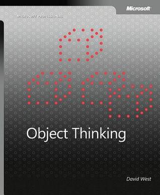

Book review: Object Thinking
Author: Kasper B. Graversen
[Introduction] [All categories] [All articles] [Edit article  ]
]
Book Review
OOP

This book is mostly for the historically interested.
Novice: 

Skilled:
Wizard:
Too long, too hard to read, too few real-life examples. Great book for historical and philosophical background information.
Please show your support by sharing and voting:


David West's book "Object Thinking", is a strange creation in the realm of computer books. For it is more philosophy, hand waving and prose than any other book I've come across. Clearly, David is a well-read scholar. Indeed he has his references in order. Claims backed up by yet other scholars. Despite this very academic style, I am not convinced about any argument in the book.
According to West, OOP can reap in order-of-magnitude improvements over traditional structured design methods. However, just jotting your code into classes doesn't make it "real OOP". It takes a very special mindset - "object thinking" - to utilize OOP effectively. We are given guidance as to how to do object thinking. These come in the form of metaphors. One of them being the "object as a person", which amongst other things state:
"Technology exists that would allow me to make hardware connections to your brain. I could then build a control box that would allow me to raise your hand whenever I pressed a button. Eventually this same technology might allow me to make you perform a complicated dance. Again, as a person, you might not like this, and neither would an object if it were a person."
And this is somewhat the most concrete the book ever gets. This is very hard to apply in practice. And it is all a bit weird to me. See actually, I'm a bit of an object thinker myself to begin with. And the book cites and gives thorough backgrounds on a number of very esteemed people in the world of computer science. But I think its the indistinctive style of writing that gets to me.
I'm being told to do "object thinking" but there are very few concrete techniques (other than CRC cards) to show for. I'm brought back to ancient Greece, to Socrates and even advice from a Taoist butcher about carving meat from a bone, only in the places where there are no meat. Droning on and on. It tires me and it annoys me. Because I really am in agreement with much of what is being said, but the 330 odd pages are strenuous on the mind. To focus. To remember and to distil what is actually being said. Its unavoidable for the mind to drift and circle in on the word "snake oil" - an expression that originally referred to fraudulent health products or unproven medicine, but which today has come to refer to any product with questionable or unverifiable quality or benefit. When there is so little concrete. Not a single code example, and when the argumentation so vague, it is hard not to think of snake oil.
At other times, the author is just on a completely different level of conscience than I. For example, p. 270 asserts that "Ensuring that it's possible for two objects to exchange messages is a matter of visibility: the objects have to be able to see each other." This is not necessarily true e.g. queues in a distributed systems or a "Mediator" design pattern. Heck, anyone who's ever seen a Unix command pipe knows how silly the claim is. He also asserts (p. 253) that over-riding a superclass method causes "cognitive dissonance.". There is a thin line between reality and psycho-babble.
To be fair, the later chapters become more concrete, addressing the "words to think with" (delegation, encapsulation, polymorphism, component, framework, methods, variable and such). It is quite clear where Kent Beck 3 years later found inspiration for his book "implementation patterns".
I was left feeling I needed more guidance on how to be a better object thinker. More examples from the real world. Focus the writing and cut the size in half! Are you interested in philosophy as it applies to software development, then this book may be for you. If you are ruthlessly pragmatic, maybe think about steering clear of this book. Irregardless of your background, expect to read the book a couple of times before things have properly sunk in.
The book distilled
To help future readers, here is an extract of advice to be found in the book
- You should write your applications as a a bunch of objects whose intercommunication results in the emergent behaviour of your application. Inevitably this will save complexity and enrich your model and implementation.
- Use single inheritance hierarchies.
- Subclasses must obey the Liskov substitution principle.
- Everything is an object.
- Simulation of a problem domain drives object discovery and definition.
- Objects must be composable.
- Distributed cooperation and communication must replace hierarchical centralized control as an organizational paradigm.
- Let objects assume responsibility for tasks that are wholly or completely delegated to other objects in cases in which the responsibility reflects natural communication patterns in the domain.
- Delegate responsibilities to get a better distribution and increase reusability.
- Use anthropomorphising and foreshadowing to determine whether an object should assume a given responsibility.
- Responsibilities should be distributed among the community of objects in a balanced manner.
- Always state responsibilities in an active voice describing a service to be performed.
- Avoid responsibilities that are characteristic specific, that focus on providing a potential user with the value of a single characteristic of the object.
- Create proxies for objects outside your domain that are sources of information required by objects within the domain.
Go to http://www.amazon.co.uk/gp/product/0735619654/ref=as_li_tl?ie=UTF8&camp=1634&creative=19450&creativeASIN=0735619654&linkCode=as2&tag=linkedin_kbg-21&linkId=OZVOEWC4UBJCU6OU
Congratulations! You've come all the way to the bottom of the article! Please help me make this site better for everyone by commenting below. Or how about making editorial changes? Feel free to fix spelling mistakes, weird sentences, or correct what is plain wrong. All the material is on GitHub so don't be shy. Just go to Github, press the edit button and fire away.
Read the Introduction or browse the rest of the site